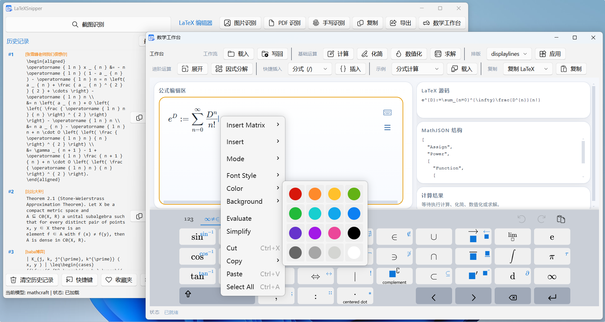
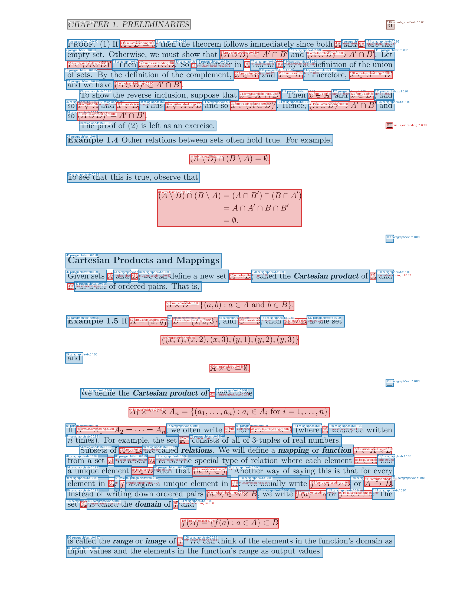
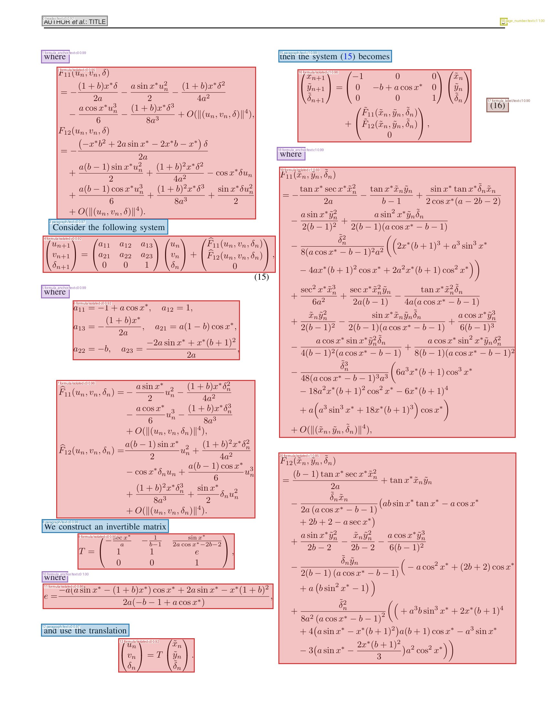
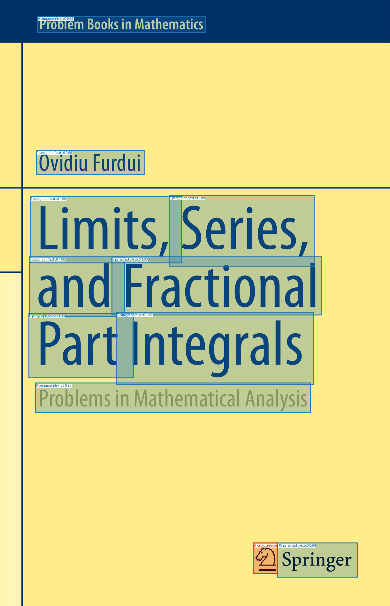

LaTeXSnipper
用户手册
适用于 v3.2.0-LTS

目录
- 开始使用前（必读）
- 主窗口功能入口与识别流程
- 自动化接口与远程设备
- 本地模型（MathCraft ONNX）相关问题
- 外部模型相关问题
- 安装和环境问题
- 网络与更新问题
- PDF 与识别效果问题
- 使用技巧与功能问题
- 平台特定问题（Linux / macOS）
- 与其他软件冲突
- 从源码运行与开发者常见问题
- 如何有效反馈 Bug
开始使用前（必读）
安装后直接开始识别
桌面发行包含应用、独立推理 Python、锁定依赖、全部模型及 Pandoc。安装后打开主窗口，在设置中选择内置模型和识别类型，再使用截图、图片、PDF 或手写入口。公式预览固定使用内置 MathJax，可离线运行。
Windows/Linux 提供 CPU 与 NVIDIA GPU 两种发行，macOS Apple Silicon 使用 CPU。GPU 发行携带私有 CUDA/cuDNN 用户态库，系统只需支持的 NVIDIA 显卡与驱动。更换 CPU/GPU 发行使用对应安装器，日常应用更新保持当前发行类型。
资源异常时
“应用诊断”报告运行版本、状态和实际错误；“模型资源”显示实际使用路径。应用更新只下载业务包并保留固定底座。底座有变化或安装资源损坏时，运行对应的完整安装包。
截图权限和系统热键限制与 OCR 独立。macOS 需要为实际运行的应用授予屏幕录制权限；Linux Wayland 的截屏与全局热键取决于桌面环境。
使用外部模型
外部模型服务需要自行部署或配置。在设置中填写协议、服务地址、模型名称及必要的密钥，并测试连接。具体配置见“外部模型相关问题”。本地 MathCraft OCR 不要求这些服务。
主窗口功能入口与识别流程
首次运行可通过快速入门了解截图、导出、快捷键与本地模型使用，也可随时重新打开“快速入门”查看。模型在后台准备。
主窗口按钮分别做什么
当前主窗口左侧是截图和历史区，右侧是 LaTeX 编辑、预览和工具入口：
- 截图识别： 使用全局快捷键或按钮进入框选截图识别。默认快捷键 Windows/Linux 为
Ctrl+F，macOS 为Command+F，可在主窗口"快捷键"按钮中修改。 - 图片识别： 选择本地图片文件并走当前识别模型。
- PDF识别： 选择 PDF 后按页渲染识别，可输出 Markdown 或 LaTeX 文档。
- 手写识别： 打开独立手写画布，写完后自动触发识别，结果可复制或写回主编辑器。
- 复制 / 导出： 复制当前编辑器内容，或通过统一导出菜单导出为 LaTeX、Markdown、MathML、HTML、OMML、SVG 以及 Pandoc 扩展格式（Word、ODT、PowerPoint、EPUB、PDF、HTML 独立页、Typst、纯文本）。
- 收藏夹 / 历史记录： 历史项和收藏项都支持复制、编辑、导出、重命名和删除。
桌面端当前共有 20 种导出格式：
- 内置格式（无需 Pandoc）： LaTeX 行内、LaTeX display、LaTeX equation、Markdown 行内、Markdown 块级、MathML、MathML
.mml、MathML<m>、MathML 属性形式、HTML、Word OMML、SVG Code - Pandoc 扩展格式： Word
.docx、ODT.odt、PowerPoint.pptx、EPUB.epub、PDF.pdf、HTML 独立页.html、Typst.typ、纯文本.txt
导出 Word、ODT、PowerPoint、EPUB 或 PDF 时，如果识别内容包含完整闭合的 SVG 源码块，程序会验证并按出现顺序保存原始 SVG 和 PNG 图像，将 PNG 嵌入目标文档，不额外添加图片标题或占位文字。图像保存在导出文件旁的 <文件名>_assets_<内容哈希> 目录；不同内容不会互相覆盖。无效、不完整或包含危险外部资源的 SVG 会被跳过。资源处理和 Pandoc 转换均在后台执行。
托盘或菜单栏状态菜单还提供 识别屏幕：默认按鼠标释放位置自动选择，也可以固定到某一块显示器。多屏截图位置不对时，优先检查这里。
设置
设置页的"选择识别模型"只有两类入口：
- 内置模型： 使用 MathCraft OCR。本地识别类型可选 公式、混合（文字+公式）、纯文字。
- 外部模型： 连接 OpenAI-compatible、Ollama 或 MinerU Local 服务。推荐预设包括 GLM-OCR、PaddleOCR-VL（FastDeploy）、Qwen2.5/Qwen3-VL 和 MinerU Local。
外部模型的 提示词模板 决定普通图片和截图识别的请求内容与结果类型，可选公式、Markdown 或纯文本。手写识别固定使用混合文档类型；内置模型及 OpenAI-compatible / Ollama 的 PDF 入口会单独询问导出格式和 DPI。填写 自定义提示词 后，自定义提示词优先级最高，会覆盖图片、截图、手写以及 OpenAI-compatible / Ollama PDF 识别的默认提示词；MinerU Local 直接解析原 PDF，不使用提示词或渲染 DPI。
普通图片和截图的确认窗口、历史记录及主窗口预览会按结果类型渲染：LaTeX 使用公式预览，Markdown 使用混合预览，纯文本使用文本预览。本地 MathCraft 的公式、混合和纯文字结果遵循相同映射。
设置中可以调整主题、语言、日志和自动化接口，通过“应用更新”升级，通过“应用诊断”排查故障。
PDF 识别流程
点击 PDF识别 后，程序会按当前模型执行：
- 当前为 内置模型 且不是混合模式时，会提示切换到 MathCraft 混合识别后继续。PDF 文档识别需要混合模式做文本和公式整理。
- 当前为 外部模型 时，必须先在设置中完成外部模型配置并通过连接测试。
- MinerU Local 会走文档解析模式，输出固定为 Markdown；其他模型会先询问输出 Markdown 还是 LaTeX。
- 程序会询问识别页码或连续范围，例如
5、3-7；默认先填入1-5，避免大 PDF 一次性耗时过长。 - 内置模型及 OpenAI-compatible / Ollama 会询问 PDF 渲染 DPI，范围为 90-300；OpenAI-compatible / Ollama 默认 150 DPI，内置模型默认 200 DPI。MinerU Local 直接解析原 PDF，不显示 DPI 选择。
- 识别结果会打开独立的 PDF 结果窗口，可编辑、复制或保存。Markdown 文档保存时，如果结构化结果包含图片资源，程序会尽量把相关 assets 一起复制到保存目录。
自动化接口与远程设备
自动化接口供 Office 加载项、本机脚本、批量程序、编辑器插件，以及经用户明确授权的远程设备提交现有图片进行识别。API 调用不会打开桌面截图遮罩，也不会改变桌面端窗口；远程设备不能订阅下一次桌面识别结果。
仅本机：推荐默认配置
普通用户、Office 加载项和同一台电脑上的 Python、AutoHotkey、AutoKey、Hammerspoon 或 ShareX 应保持以下设置：
| 设置 | 推荐值 | 说明 |
|---|---|---|
| 访问范围 | 仅本机 | 不接受其他设备连接 |
| 端口 | 28765 |
只有端口冲突时才修改 |
| 监听地址 | 127.0.0.1 |
不要填写路由器地址、其他设备地址或 0.0.0.0 |
开启“自动化接口”后，本机客户端从应用状态目录中的 automation-api.json 自动读取实际地址和每次启动都会更新的本机会话 token。Office 加载项不需要手工填写端口或 token。关闭 API 后该发现文件会被删除。
远程设备：推荐使用 Tailscale 或 WireGuard
最简单、安全的家庭远程方案是让运行 LaTeXSnipper 的电脑和手机/远程电脑加入同一个 Tailscale 网络：
- 在两台设备上安装并登录 Tailscale，确认它们可以互相访问。
- 在运行 LaTeXSnipper 的电脑上查询 Tailscale 地址，例如执行
tailscale ip -4，得到类似100.x.x.x的地址。 - 打开“设置 → 高级设置 → 自动化接口”，将“访问范围”改为“远程设备”。
- “安全方式”选择“安全隧道（推荐）”；“监听地址”填写本机的 Tailscale/WireGuard 接口地址，不能填写远程设备地址、普通局域网地址或
0.0.0.0。 - 端口通常保留
28765；生成独立的远程访问密钥并安全复制到远程设备。 - “浏览器 Origin 白名单”通常留空；只有网页 JavaScript 直接跨域调用时才填写网页的准确 Origin。
- 默认不要开启远程外部模型。只有确实需要调用桌面端已经配置好的 Ollama、MinerU 或在线接口，并接受资源/费用消耗时才开启。
- 勾选安全确认项，保存配置，然后开启自动化接口。必要时只允许 VPN 网卡访问该端口的系统防火墙规则。
远程设备使用 http://<隧道地址>:28765 作为基础地址，并在每个受保护请求中发送：
Authorization: Bearer <远程访问密钥>可以先访问 GET /api/v1/health 检查连通性，再以 multipart/form-data 向 /api/v1/recognition/jobs 提交一个或多个 images 字段。iOS Shortcuts、Android Tasker、curl 和 Python 都不需要填写浏览器 Origin 白名单。手机远程调用要求家中电脑保持开机、LaTeXSnipper 正在运行且自动化接口已开启；识别结果直接返回调用端，不会唤起家中电脑的截图界面。
例如，远程电脑可以使用以下命令提交一张图片。下面使用 macOS/Linux shell 的续行符；Windows PowerShell 应改用 curl.exe，并使用 PowerShell 反引号作为续行符：
curl -sS "http://100.x.x.x:28765/api/v1/recognition/jobs"
-H "Authorization: Bearer <远程访问密钥>"
-H "Prefer: wait=30"
-F backend=mathcraft
-F mode=formula
-F "images=@formula.png"返回 202 表示任务仍在后台执行，应按响应中的 Location 查询结果；返回 200 表示等待期间已经完成。
HTTPS 模式
没有安全隧道时可以选择 HTTPS，但需要自行准备证书和私钥：监听地址填写这台电脑实际使用的非回环网卡 IP，证书的 SAN 必须覆盖远程设备访问时使用的主机名或 IP，并且远程设备必须信任该证书。不要把自签名证书错误或明文 HTTP 服务直接暴露到公网；家庭用户优先使用 Tailscale/WireGuard。
字段说明与启动耗时
- 端口： 本机和远程调用地址的一部分。保持
28765可以减少客户端配置；端口被其他程序占用时才更换。 - 监听地址： 指运行 LaTeXSnipper 这台电脑上的本地网卡地址，不是允许访问的客户端地址。本机模式固定使用回环地址；隧道模式必须是被识别出的 VPN 接口地址。
- 远程访问密钥： 与本机会话 token 完全独立，重启 API 后仍保持不变，除非点击重新生成或撤销。密钥只应保存在受信任设备中。
- 浏览器 Origin 白名单： 只控制浏览器 CORS，格式为
协议://主机[:端口]，多个地址用英文逗号分隔，不能包含路径。它不是设备 IP 白名单，也不会影响 Office、curl、Shortcuts、Tasker 或普通 Python 客户端。 - 允许远程设备调用外部模型： 只增加远程密钥的外部模型权限；远程端仍不能读取或覆盖桌面端保存的模型地址、模型名、API Key 和提示词。
API 开关在后台执行，开启本身不会加载或预热 MathCraft。服务正在运行时，如果端口、监听地址、安全方式、证书、密钥、CORS 或远程权限发生变化，保存操作必须停止并重新绑定一次服务，因此会比普通设置保存稍慢，本机会话 token 也会更新。没有实际变化的重复保存不会重启服务。不要在识别任务进行中连续修改网络配置或反复开关；正常启停通常很快，持续数秒时应检查端口占用、防火墙、证书/私钥以及运行日志。
本地模型（MathCraft ONNX）相关问题
模型与识别类型
内置 MathCraft OCR 提供公式、纯文字及文字与公式混合识别。PDF 页面使用混合模式恢复文档内容。公式模式适合裁剪清晰的单个公式；正文或图文页面应使用文字或混合模式。
权重在哪里
发行程序只使用安装目录中的模型，加载前按模型清单校验。权重缺失或损坏时停止加载，请重新运行完整安装包；安装版不使用外部模型缓存或自动下载权重。
源码桌面端和独立库、CLI 使用以下默认缓存位置：
- Windows：
%APPDATA%/MathCraft/models - Linux：
${XDG_DATA_HOME:-~/.local/share}/LaTeXSnipper/MathCraft/models - macOS：
~/Library/Application Support/LaTeXSnipper/MathCraft/models
可以通过“模型资源”查看各模型实际使用的路径；加载错误请查看“应用诊断”和运行日志。
源码桌面端显式使用默认缓存位置，不读取 MATHCRAFT_HOME。独立使用 mathcraft-ocr 库或 CLI 时，可以用公开参数或环境变量指定缓存，并保留自动下载行为。安装版不使用该缓存；清理缓存可能影响源码运行及 CLI。
下载失败或识别不可用
业务更新和源码运行的模型下载需要网络。检查网络、代理、磁盘空间及应用运行日志；需要代理时可以为启动进程配置 HTTP_PROXY、HTTPS_PROXY。安装资源异常或程序无法启动时，重新运行完整安装包。
CPU 发行固定使用 CPU；GPU 发行固定请求 CUDA，并在推理后核对私有库加载位置。GPU 失败时诊断硬件、驱动或资源问题，不自动改变发行类型。需要 CPU 时使用 CPU 安装器。
提高识别质量
- 裁剪到目标区域，保留完整上下标，避免边缘截断。
- 提供清晰、有对比度的图片，避免过度缩放和压缩。
- 对混合正文选择混合识别，对单个公式选择公式识别。
- 在结果编辑器中核对源码，再复制或导出。
外部模型相关问题
根本没配置外部模型，直接点识别然后报错
现象： 截图后识别失败，提示"模型名为空"或"外部模型地址为空"。
外部模型客户端要求普通视觉协议填写模型名和 Base URL；MinerU Local 可不填模型名。
默认 model_name 就是空字符串，你需要手动填写。
解决： 先去 设置 → 外部模型，至少填上 Base URL 和模型名（或选择预设），点"测试连接"通过后再使用。
Base URL 应该填服务根地址
现象： 服务本身正常，但测试连接访问了重复路径，或提示接口路径不存在。
原因： LaTeXSnipper 会按协议自动拼接接口路径：
- Ollama：
<Base URL>/api/tags测试模型列表，<Base URL>/api/chat执行识别 - OpenAI-compatible：
<Base URL>/v1/models测试模型列表，<Base URL>/v1/chat/completions执行识别 - MinerU Local：
<Base URL>/<健康检查路径>测试连接，<Base URL>/<解析接口路径>执行解析
解决： Base URL 只填服务根地址，例如 http://127.0.0.1:11434、http://127.0.0.1:8000 或服务商 HTTPS 根地址；不要手动追加 /v1、/api/chat、/v1/chat/completions 或 /file_parse。
模型没预热（冷启动），第一次调用巨慢或超时
现象： 首次 OCR 识别等待很久（可能超过 60 秒），然后报超时。
原因： vLLM / Ollama / 本地 ONNX 模型首次加载需要将模型读入内存/显存，尤其是大模型（7B+）。默认超时仅 60 秒。
解决：
- 方案 A： 首次使用前先手动调用一次预热（用 curl 或 Ollama 的 API 测试页面）
- 方案 B： 在设置里把超时提高到 120-180 秒
- 方案 C： Ollama 用户可以先
ollama run <model_name>确保模型已在内存中
Ollama 已启动但 Base URL 填错
现象： 测试连接报"无法连接到 127.0.0.1:11434"。
常犯错误：
- 填了
http://localhost:11434/v1（Ollama 不需要/v1后缀） - 填了
https://而不是http://（本地 Ollama 默认不开 HTTPS） - Ollama 服务实际监听在其他端口，但用户没改端口号
- Ollama 根本没启动（
ollama serve没运行）
先在浏览器访问 http://127.0.0.1:11434/api/tags，如果返回 JSON 就说明正常。
模型名拼写错误 / 大小写不对
现象： 测试连接提示"模型名不存在: xxx"，然后列出可用模型。
原因： 模型名必须完全一致，包括大小写。
解决：
- Ollama 用户执行
ollama list查看确切模型名 - OpenAI-compatible 用户查服务文档或
/v1/models接口返回值
线上 API 用了但没填 API Key
现象： 测试连接或识别时报 401 "接口认证失败"。
原因： 线上服务（硅基流动、DeepSeek、OpenAI 等）必须提供 API Key。本地 Ollama 通常不需要。
解决： 在设置的 API Key 栏填入正确的密钥。
API Key 是敏感信息，请勿分享给他人或上传到公开仓库。
LaTeXSnipper 不会将你的 API Key 发送到除你指定的 Base URL 以外的任何地方。
MinerU Local 协议选了但是服务端没配好
现象： 测试连接报 404 或 409。
原因： MinerU 的默认测试端点是 /health，默认解析端点是 /file_parse。不同版本可能用不同路径。
解决：
- 先确认 MinerU 服务是否在运行：浏览器访问
http://127.0.0.1:8000/health - 如果路径不对，在设置中修改"解析接口路径"和"健康检查路径"
- MinerU 409 错误通常表示解析任务失败，查看 MinerU 服务端日志
MinerU Local 与普通视觉模型走不同链路：
- 测试连接访问
Base URL +健康检查路径，默认/health - 图片识别和 PDF 解析访问
Base URL +解析接口路径，默认/file_parse - 解析请求会依次尝试
pipeline、hybrid-auto-engine、vlm-auto-engine - PDF 使用 MinerU Local 时会把原 PDF 交给服务端解析；OpenAI-compatible / Ollama 则由 LaTeXSnipper 用 PyMuPDF 按 DPI 渲染页面后逐页发送图片
选了 OpenAI-compatible 协议但服务是 Ollama
现象： 测试连接时访问 /v1/models 返回 404。
原因： Ollama 的模型列表接口是 /api/tags，不是 /v1/models。
解决： 把协议从 "OpenAI-compatible"改成 "Ollama"。
- Ollama 服务 → 选 Ollama
- 硅基流动 / DeepSeek / OpenAI / Groq 等 → 选 OpenAI-compatible
- MinerU 本地服务 → 选 MinerU Local
- 本地 MathCraft ONNX → 在"选择识别模型"中选 内置模型
自定义提示词把系统提示覆盖了导致输出格式错乱
现象： 填写了自定义提示词后，输出变成了自然语言解释而不是 LaTeX 代码。
原因： 自定义提示词优先级最高，会完全覆盖图片、截图、手写以及 OpenAI-compatible / Ollama PDF 识别的模板提示词。如果自定义提示词没有明确输出格式，模型可能返回解释文字或不符合导出格式的内容。MinerU Local 不使用提示词。
解决： 如果不确定怎么写，清空自定义提示词，只用模板。
安装和环境问题
选择发行
- Windows x86_64：CPU 或 NVIDIA GPU 安装器。
- Debian/Ubuntu 兼容的 Linux x86_64（glibc 2.35 及以上）：CPU 或 NVIDIA GPU 离线安装归档，解包后运行
sh install.sh。 - macOS 14.0 及以上的 Apple Silicon：CPU DMG，把应用复制到 Applications 后运行。
发行携带 Python、推理依赖、模型、Pandoc 和内置预览资源，无需自行安装 Python 或 CUDA Toolkit。Linux 包管理器仍负责 Qt 所需的系统图形库；缺少依赖时，安装器通过 apt 补齐，需要可用的软件源和网络，或已缓存的依赖包。GPU 仍需要支持的显卡和系统驱动；3.2.0 的最低 NVIDIA 驱动版本为 Windows 570.65、Linux 570.26。普通 PDF 文件导出需要用户提供 LaTeX PDF 引擎。
安装资源与用户数据
Windows 安装目录包含业务目录 application 和固定资源目录 runtime、inference、models，以及 distribution.json。Linux 文件由 dpkg 管理，位于 /usr/lib/latexsnipper，安装身份位于 /var/lib/latexsnipper/distribution.json。macOS 业务目录位于应用的 Contents/Resources/desktop，固定资源位于 Contents/Frameworks/LaTeXSnipperBase.bundle/Contents/Resources。
配置、历史、收藏和日志属于用户数据。Windows/Linux 应用状态位于 ~/.latexsnipper；macOS 位于 ~/Library/Application Support/LaTeXSnipper，日志位于 ~/Library/Logs/LaTeXSnipper。MathCraft 默认模型缓存独立于安装组件。
权限与重装
默认用户安装位置可由当前用户更新；受保护位置的部署由独立更新进程申请平台权限。Linux 通过 dpkg 更新业务包和文件归属；macOS 保留独立签名底座，只替换业务资源并重新执行本地 ad-hoc 签名。
重新运行安装器会按目标清单部署完整组合。Windows/Linux 更换 CPU/GPU 发行使用对应安装器，正常更新保持当前类型。下载和暂存阶段不会覆盖运行中的组件。
卸载与清理
Windows 使用系统卸载入口；Linux 卸载四个安装包：
sudo dpkg --purge latexsnipper-runtime latexsnipper-inference latexsnipper-models latexsnippermacOS 删除安装的应用。卸载只移除产品拥有的安装资源；用户配置、日志及共享模型缓存可另外按需清理。Windows 卸载选项分别提供应用数据与模型缓存清理；Linux 在卸载前可使用 latexsnipper-clean-user-data 命令选择清理范围。macOS 退出应用后可按用户数据位置手动清理，源码仓库也提供支持 Linux/macOS 的 scripts/latexsnipper-clean-user-data.sh。共享模型缓存可能也被 mathcraft-ocr CLI 使用。用户保存的导出文件和外部工具由用户自行管理。
网络与更新问题
何时需要联网
完整安装后，本地识别、编辑与内置 MathJax 预览可以离线使用。HTML 独立页导出使用 CDN，接收者打开文件时需要联网加载公式和字体。业务更新、源码模型下载、外部在线模型需要网络。外部本地服务是否需要网络取决于其部署方式。
应用更新与完整安装
“应用更新”检查匹配当前平台、架构及 CPU/GPU 类型的发行。日常更新只下载和校验业务包，替换业务文件并删除废弃业务文件，保留 Python、Qt、Pandoc、推理依赖、模型与用户数据，不全量扫描固定资源。目标版本需要新的底座时，会提示下载完整安装包；首次切换到该架构也需要完整安装。
下载支持暂停、继续与取消；中断文件按内容身份保存，复用前验证长度和 SHA256。准备完成后确认安装，应用停止识别与 worker 并退出，独立部署进程完成替换和验证。需要权限时由操作系统显示授权窗口。
“应用诊断”报告版本、运行状态与实际错误，不执行推理环境或权重的完整性扫描。底座损坏或业务程序无法启动时，请重新运行完整安装包。更新校验或部署失败时不提交新身份，中断事务在下次启动前恢复。临时备份只用于本次失败恢复，成功提交后清理；清理失败稍后重试，不撤销已完成的更新。不提供历史版本选择或手动降级。
常见失败
- 无匹配发行清单：查看发布状态及应用日志，不选择其他平台或类型的载荷。
- 网络或摘要校验失败：检查代理和连接后重试，损坏下载不会进入部署。
- 空间不足：清理空间后重试，保留当前组件。
- 权限不足或文件占用：关闭其他应用实例，并按系统提示授予必要权限。
- 源码运行：应用显示源码更新说明，使用 Git 和开发工具更新源码与环境。
PDF 与识别效果问题
PDF 识别结果很乱
现象： 用内置模型或外部模型识别 PDF 效果很差。
原因：
- DPI 过低会丢失小字和细线细节；过高会增加内存和处理时间，使用外部模型时还可能触发缩放、输入限制或超时
- 扫描件与文字型 PDF 处理方式不同
- 提示词模板不匹配（用了公式模板去识别文档）
解决：
- 文字型 PDF：尝试 140-170 DPI
- 扫描件：尝试 200-300 DPI
- 外部模型普通图片识别：确认设置中的提示词模板与任务匹配；手写识别固定使用混合文档类型
- PDF 识别：内置模型及 OpenAI-compatible / Ollama 在 PDF 入口单独选择 Markdown/LaTeX 与 DPI；MinerU 文档解析直接使用原 PDF 并固定输出 Markdown
切换了输出模式但结果没变
现象： 设置里选了 LaTeX 输出，但返回的还是 Markdown。
原因： 提示词模板决定普通图片和截图的结果类型；手写识别固定使用混合文档类型，PDF 入口的格式选择独立。自定义提示词会覆盖 OpenAI-compatible / Ollama 的内置提示词，包括手写和 PDF 识别；MinerU Local 走文档解析接口，不使用提示词。
解决： 清空自定义提示词并确认提示词模板；如果是 PDF，请重新从 PDF 入口选择导出格式。
大图片 / 高分辨率截图识别失败
现象： 截了 4K 屏幕的图，识别直接报错或超时。
原因： 图片太大，Base64 编码后体积膨胀约 33%，可能超过服务端请求体大小限制，或传输太慢导致超时。
解决：
- 缩小截图范围
- 降低截图分辨率
- 提高超时时间
使用技巧与功能问题
预览与导出
公式预览固定使用内置 MathJax。修改 LaTeX 后实时查看结果；复制菜单提供 LaTeX、Markdown、MathML、HTML、SVG、图片和 Office 公式等输出。按用途选择格式，纯源码编辑保留原文。
桌面发行的固定底座提供 Pandoc，支持 DOCX、ODT、PPTX、EPUB、独立 HTML、Typst、纯文本和 PDF 文件导出。PDF 导出还需要外部 XeLaTeX、LuaLaTeX 或 pdfLaTeX。源码开发使用 PATH 中的 Pandoc；随包 Pandoc 缺失时重新运行完整安装包。
桌面端 Word OMML 导出仅支持 Windows，需要正常注册的 Microsoft Word 及其安装目录中的 MML2OMML.XSL。自定义 Office 安装位置通过 Windows App Paths 定位；若注册或样式表缺失，请修复 Office 安装。该条件不影响其他导出格式。
手写识别
打开手写窗口，在画布上书写后识别。结果进入公式编辑器，可修改源码、预览、复制和导出。手写窗口采用同一内置模型与 MathJax 预览资源。
历史、收藏与快捷键
识别结果保存在历史中，可重新编辑并加入收藏。设置中提供截图快捷键、主题、语言与启动行为。Windows/Linux 使用 Ctrl 作为主要修饰键，macOS 使用 Command；系统保留组合会被拒绝，可使用允许的带 Shift 或 Option 的组合。
窗口关闭与退出
Windows 有托盘时关闭主窗口会隐藏，使用托盘退出。Linux 无托盘时会询问退出；macOS 关闭窗口会隐藏主窗口并保留应用进程，可通过 Dock 或菜单栏重新打开，使用菜单退出或 Command+Q。
平台特定问题（Linux / macOS）
Linux 图形环境与截图
X11 使用 pynput 监听全局热键。Wayland 使用桌面提供的 GlobalShortcuts Portal，需要完成系统授权；实际组合键由桌面确认，应用显示授权后的快捷键。取消修改会保留原有授权。若桌面未提供该接口，请检查 xdg-desktop-portal 及对应桌面后端，也可使用截图按钮或切换 X11 会话，无需以 root 运行。
Wayland 使用桌面的 Screenshot Portal 获取屏幕图像，再由应用进行区域框选；桌面需提供该接口并允许截图。截图失败时请检查桌面授权和 Portal 服务。X11 使用 Qt 截图。
Linux 安装依赖必要的系统 Qt 图形库，但不使用系统 Python、CUDA Toolkit 或 cuDNN。
macOS 屏幕录制权限
macOS 使用 Qt 截图。把应用复制到 Applications，退出后从同一位置重新启动。在“系统设置 → 隐私与安全性 → 屏幕录制”中为实际运行的应用授权；较新系统可能将该项命名为“屏幕与系统音频录制”。开启后用 Command+Q 完全退出并重新启动，关闭窗口不会退出应用。
源码运行应授权系统列出的 Python、Terminal 或 IDE 启动进程。不要直接从 DMG 或应用转移位置持续运行。原生 Carbon 全局热键通常不需要辅助功能权限，截图权限单独检查。
开发机存在失效权限记录时可手动重置后重新授权：
tccutil reset ScreenCapture com.mathcraft.latexsnipper应用不会自动执行重置。若授权检查成功但截图为空，报告屏幕布局、选区和截图日志。
macOS 签名与重新安装
macOS 安装包使用 ad-hoc 签名，未经 Apple 公证，不需要用户提供 Developer ID。业务更新保留固定底座签名并重新签署外层应用；安装资源损坏时重新安装。
与其他软件冲突
源码运行时 Python 环境不一致
现象： 从终端运行源码正常，但 IDE 启动失败，或反之。
原因： 终端与 IDE 选择了不同的 Python 环境。源码运行使用启动应用的解释器，推理 worker 也使用同一环境。
解决：
- 运行
python -c "import sys; print(sys.executable)"确认当前解释器 - 在 IDE 中选择同一环境，并在该环境安装项目依赖
- 桌面安装包使用随包部署的独立推理环境；安装资源异常应重新运行完整安装包
输入法 / 屏幕取词软件干扰截图
现象： 截图快捷键无效或截到的画面不对。
原因： 某些输入法、词典取词、录屏软件占用全局快捷键或 hook 了屏幕捕获。
解决： 暂时关闭冲突软件的屏幕相关功能，或在 LaTeXSnipper 设置中修改截图快捷键。
如何有效反馈 Bug
提供可复现信息
提交 Issue 时包含操作系统、应用版本、CPU/GPU 发行类型、输入类型、具体步骤、完整报错和必要截图。识别错误最好附可公开的输入样例以及期望结果。外部服务问题应说明协议与模型配置，密钥无需提供。
诊断与日志
设置中的“应用诊断”显示安装版本、底座身份、Python/ORT 版本、计算提供者及实际运行错误。“运行日志”显示当前会话诊断。请附应用日志目录；闪退时还需 crash-native.log（如果生成）。
- Windows：
%USERPROFILE%/.latexsnipper/logs - Linux：
~/.latexsnipper/logs - macOS：
~/Library/Logs/LaTeXSnipper
模型问题请附实际模型路径及加载错误；GPU 问题请附显卡型号与驱动版本；更新或重新安装失败请附完整日志。
从源码运行与开发者常见问题
使用同一开发 Python
选择 venv、Conda、uv 等受支持的 Python 环境，运行、测试和 IDE 使用同一解释器。三平台统一安装 requirements.txt，平台专用依赖由环境标记自动选择。本地 OCR 还需要 CPU extra：
python -m pip install -r requirements.txt
python -m pip install -e '.[cpu]'
python src/main.py源码 worker 使用启动应用的 Python，固定 CPU，并显式使用库的平台默认缓存。开发依赖由标准开发工具管理。源码 Pandoc 从 PATH 获取；PDF 文件导出的 LaTeX 引擎同样由开发者提供。
检查与发行构建
在选定环境中安装检查工具后执行：
python -m pytest -q
python -m pyright --pythonpath <selected-python>
python -m compileall -q src mathcraft_ocr scripts
python scripts/update_translations.py --check
python scripts/check_ui_translations.py客户端安装器由 GitHub Actions 构建，复用输入未变化的固定底座和维护程序；原生安装与识别验收按需单独运行。
加载项介绍与系统要求
什么是 Office 加载项
LaTeXSnipper Office 加载项是一个 Windows 原生 VSTO 插件，安装后会在 Word 和 PowerPoint 的功能区（Ribbon）中添加 LaTeXSnipper 专用标签页。截图 OCR 作为普通客户端通过本机 Automation API 创建、查询和取消独立任务。
系统要求
- Windows 版本： Windows 10 22H2 或更高版本 / Windows 11
- Office 版本： Microsoft 365 应用（当前通道或月度企业通道）、Office 2024 / 2021 / 2019 零售版或批量许可版、Office LTSC 2024 / 2021
- 运行时： .NET Framework 4.8、Visual Studio Tools for Office Runtime 10.0、Microsoft Edge WebView2 Runtime；缺少 VSTO Runtime 时，安装器会提示先安装
- Office 体系： 仅支持 32 位和 64 位桌面版 Office；不支持网页版、移动版和 macOS 版 Office
- LaTeXSnipper 桌面端： 使用截图 OCR 时需在本机运行并开启"自动化接口"
安装前检查
- 安装前请关闭所有正在运行的 Word 和 PowerPoint 窗口。Office 进程会锁定加载项 DLL，安装程序无法覆盖。
- 如果此前安装过开发版（通过脚本手动注册），请先使用注册脚本的反注册功能清理，或运行安装包执行升级安装。
- 安装程序需要管理员权限，用于写入 HKLM 注册表和受信任的发布者证书存储。
安装与注册
安装流程
关闭 Word 和 PowerPoint 后运行安装器。安装器会部署加载项、配置信任与 Office 注册，并注册匹配 Office 位数的 OLE 公式处理程序；无需另行运行 VSTO 注册工具。安装完成后重新打开 Office。
自定义安装路径
安装程序支持自定义安装路径，VSTO 注册和文件引用会自动适配所选路径。不建议将加载项安装到受保护的临时目录或网络路径。
卸载
通过 Windows"设置 → 应用 → 已安装的应用"卸载，或运行安装目录下的 unins000.exe。卸载程序会自动：
- 删除所有安装文件
- 移除 HKLM 注册表键值
- 移除插件的 VSTO 信任记录和 OLE 公式处理程序注册
- 清理 Office 禁用项和崩溃记录
命令行静默安装
安装包支持 Inno Setup 标准静默参数：
#静默安装（显示进度条）
LaTeXSnipperOffice_3.2.0_amd64.exe /silent
#完全静默（无界面）
LaTeXSnipperOffice_3.2.0_amd64.exe /verysilent
#自定义安装目录
LaTeXSnipperOffice_3.2.0_amd64.exe /dir="<安装目录>"Word 功能详解
功能区概览
安装后，Word 功能区的最后位置会出现 LaTeXSnipper 标签页，包含 9 个功能组：
- 公式组： 行内公式、行间公式、带编号公式、截图识别
- 编辑组： 加载所选、删除所选
- 转换组： 转为 MathType、转为 OLE、转为 Word
- 公式解析组： 解析所选、解析全文
- 交叉引用组： 插入引用
- 编号组： 添加编号、重编号
- 编号边界组： 章分隔符、节分隔符
- 公式样式组： 格式化所选、格式化全文
- 工具组： 状态窗格、设置、帮助
公式插入方式
Word 支持插件 OLE 对象和 Word 原生 OMML（Office Math Markup Language）公式，在“设置 → 公式插入方式”中选择：
- OLE 对象（默认）： 本地渲染的矢量公式对象，双击或“加载所选”可打开插件编辑器。复制到另一份文档后仍可加载并独立编辑。
- Word 原生公式： 可直接使用 Word 的公式工具编辑，也可通过插件加载、更新和转换。
OMML 公式是 Word 原生格式，卸载加载项后公式仍然可以正常显示和编辑。加载项插入的公式会附带 LaTeXSnipper 管理元数据（公式源码、显示模式、编号模式），用于后续加载、更新和重编号。普通 Word 公式没有 LaTeXSnipper 元数据，插件不会猜测其 LaTeX 来源。
三种插入模式
- 行内公式： 插入正文中的行内公式，跟随文字排版
- 行间公式： 插入居中显示的独立公式
- 带编号公式： 插入自动编号的行间公式，编号位置、外框、章/节层级和层级分隔符可在设置中配置
公式解析
“解析所选”和“解析全文”可将正文及表格单元格中完整且非空的 $...$、\(...\)、$$...$$ 和 \[...\] 转换为 LaTeXSnipper 管理公式。$...$ 与 \(...\) 生成无编号行内公式；$$...$$ 与 \[...\] 生成行间公式，并使用当前插入方式、字体、颜色、缩放和编号选项。
行间公式中的有效顶层 \tag{...} 优先作为自定义编号，解析本身不执行全文重编号。已有 LaTeXSnipper 公式、Word 原生公式、字段、引用和受保护内容会被跳过；单个公式失败时保留原文并继续处理。批量解析分批显示进度并支持 Word 撤销，取消或超时后可再次执行以继续处理剩余公式。
加载、更新和删除
选中由 LaTeXSnipper 插入的公式后：
- 加载所选： 将公式保存的源码加载到公式编辑器，可以修改后更新原公式
- 更新： 在编辑器中修改后点击更新，新公式会替换原公式，保留元数据
- 删除所选： 删除选中的插件公式；删除带编号公式时同时删除其编号段落
添加编号与重编号
Word 支持将未编号的 LaTeXSnipper 公式转换为自动编号公式，并按文档顺序维护自动编号：
- 添加编号： 为选中的行间公式添加自动编号。如果公式已有编号，不会重复添加
- 重编号： 按文档顺序更新所有自动编号公式的 SEQ 字段、编号书签和引用字段，不重新渲染公式内容；缺失元数据或编号字段的异常公式会被跳过并计数
- 编号位置： 设置中可选择右编号或左编号；该设置只影响新插入的编号公式和之后被自动编号的普通公式，不改变已有公式的编号属性
章/节分隔符与层级编号
支持多层级公式编号体系。在文档中插入章或节分隔符后，自动编号会按层级生成（例如 1.1、1.2）。
- 插入章分隔符： 标记新章开始，后续自动编号重置为当前章号
- 插入节分隔符： 标记新节开始，后续自动编号追加当前节号
- 包含章/节编号： 设置中可控制编号是否包含章或节的层级部分
- 分隔符样式： 层级分隔符可在设置中选择（
.、-、·、:、/） - 隐藏分隔符： 设置中可隐藏插入文档中的分隔符标记
交叉引用
支持在文档正文中插入对公式编号的交叉引用：
- 插入引用： 在光标位置插入引用占位符，然后选中目标公式或目标公式所在段落，自动生成交叉引用
- 交叉引用与 Word 原生交叉引用系统集成，可通过 Word 的"更新域"刷新
公式转换
选中公式后，通过功能区转换组选择目标格式：
- 转为 MathType： 将普通插件 OLE 公式转为 MathType 原生对象；带编号公式暂不支持
- 转为 OLE： 将插件 OMML、Word 原生 OMML 或 MathType 公式转为插件 OLE 对象
- 转为 Word： 将 OLE 公式转为 Word 原生 OMML 公式（可像 Word 公式一样直接编辑）
MathType 双向转换无需安装 MathType；双击编辑 MathType 对象需要安装。转为 MathType 不保留原插件源码与字体快照，转回 OLE 根据对象当前内容生成。
Word 原生 OMML 或 MathType 转为 OLE 后保存的是 MathML 源码，可加载、更新、格式化及继续转换，不会还原为原始 LaTeX。
格式重置
- 格式化所选： 恢复所选插件公式的默认样式和自然大小
- 格式化全文： 恢复全文插件公式的默认样式和自然大小
两者均使用当前设置中的公式默认属性，只处理样式或尺寸需要恢复的插件公式。
性能与复杂度参考
下面的复杂度用于估算长文档中的响应时间。设 n 为参与操作的公式数，m 为文档中 LaTeXSnipper 管理公式总数，c 为文档中的内容控件、图片/OLE 对象或形状数量，f 为 Word 域数量，p 为当前段落内公式对象数量，s 为单个公式源码或 OMML/MathML XML 的长度，r 为一次 MathJax 渲染或图片/OLE 生成成本。
| 插入 OLE 公式 | O(s +r +ole) |
O(s +r +ole) |
|---|---|---|
| MathJax 渲染、EMF/OLE 对象创建、Office COM 插入 | 插入 Word OMML | O(s +r +xsl +xml) |
| 不适用 | MathJax 转 MathML、MML2OMML XSL、Word InsertXML |
插入 PowerPoint PNG |
| 不适用 | O(s +r +png) |
MathJax 渲染、SVG/PNG 光栅化、形状插入 |
| 插入带编号公式 | O(s +r +ole/xml +c) |
不适用 |
| 公式插入、SEQ 编号域、书签、居中/右对齐制表位布局 | 加载所选 | O(c) 最坏，通常接近 O(1) |
O(c) 最坏，通常接近 O(1) |
从选区附近定位元数据，必要时扫描对象 | 更新公式 |
O(s +r +replace) |
O(s +r +replace) |
重新渲染和替换原对象；OLE 会保留用户缩放 |
| 删除所选 | O(c +n log n) |
O(c +n) |
| 收集所选插件公式；Word 按文档位置倒序删除，带编号公式同时删除编号段落 | 添加编号 | O(s +r +replace +before) |
| 不适用 | 将普通行间公式改为编号布局，只扫描当前位置前的编号时间线 | 重编号 |
O(c +f +m log m +refs) |
不适用 | 收集并排序自动编号公式和章/节边界，一次建立 SEQ 字段映射，更新编号书签和 LaTeXSnipper 引用域 |
| 插入章/节分隔符 | O(c +m log m +refs) |
不适用 |
| 插入边界控件后立即重编号全部自动编号公式 | 插入交叉引用 | O(1) 插入占位，选择目标时最坏 O(c +f) |
| 不适用 | 查找目标公式、定位编号书签并创建 Word REF 域 | 公式解析 |
O(c +n * (s +r +replace)) |
不适用 | 安全范围扫描、公式渲染和 Office 对象替换 |
| 转 OLE（插件 OMML） | O(n * (s +r +ole)) |
O(n * (s +r +ole))（PNG → OLE） |
| 渲染、OLE 创建、逐个 COM 替换 | Word 原生 OMath 转 OLE | O(n * (s +xsl +r +ole)) |
| 不适用 | OMML2MML XSL、MathJax 按 MathML 渲染、OLE 创建 | 转 Word OMML / PNG |
O(n * (s +r +xsl +xml)) |
O(n * (s +r +png)) |
OLE/PNG 重新生成和 Office 对象替换 |
| 格式化所选 | O(n * (s +r +replace)+p) |
O(n * (s +r +replace)) |
| 只有属性不同或尺寸被改过时才重新渲染/重置；Word 行内基线只扫描当前段落 | 格式化全文 | O(m * (s +r +replace)+p) |
O(m * (s +r +replace)) |
复用所选格式化流程，按当前默认样式重绘需要恢复的公式并重置自然大小 | 截图识别 |
O(ocr +s +r) |
O(ocr +s +r) |
桌面端 OCR 和后续公式插入 |
转换、公式解析和格式化会分批执行并更新状态窗格；单项失败会报告具体错误，并继续处理其他项，结束后显示处理统计。重编号会跳过编号信息不完整的公式并计数。长公式或大量公式时，主要耗时仍来自 r（MathJax 渲染/图片生成）和 ole/xml/png（Office COM 插入与对象替换）。建议长文档批量处理时分段执行并保存文档。
格式化保留公式源码，通过当前默认属性重新渲染；LaTeX 和 MathML 源码均可处理。原生行内公式由 Word 自己维护外层公式输入框，少数单选场景下外层占位框可能由 Word 保留；继续转为 LaTeXSnipper 管理的 OMML 后会由插件接管并清理为插件格式。
截图识别
打开 LaTeXSnipper 桌面端，并启用设置中的“自动化接口”。点击插件“截图识别”后，使用桌面端全局快捷键框选公式；识别结果会填入 Office 公式编辑器。等待期间再次点击“截图识别”可取消。普通公式编辑和插入无需启动桌面端。
PowerPoint 功能详解
功能区概览
PowerPoint 的 LaTeXSnipper 标签页结构与 Word 类似，但功能更精简：
- 公式组： 插入公式、截图识别（识别流程与 Word 相同）
- 编辑组： 加载所选、删除所选
- 转换组： 转为 MathType、转为 OLE、转为 PNG
- 公式样式组： 格式化所选、格式化全文
- 工具组： 状态窗格、设置、帮助
插入公式
光标位于文本框文字中时，点击“插入公式”生成随文字排版的 PowerPoint 原生公式，可用 PowerPoint 的公式工具编辑。
其他位置按设置插入居中的独立 OLE 对象或高 DPI PNG 图片；OLE 支持双击编辑，PNG 可通过“加载所选”修改。
加载、删除、转换和批量格式化面向插件插入的独立对象；文本内原生公式由 PowerPoint 管理。PowerPoint 不支持插件自动编号和重编号。
加载与删除
- 加载所选： 将所选插件 OLE 或 PNG 公式载入编辑器；修改后点击“更新”，尽量保留原位置和手动缩放
- 删除所选： 删除选中的插件 OLE 或 PNG 公式
OLE 公式复制到另一份演示文稿后仍可加载并独立编辑。
公式转换与格式重置
- 转为 MathType： 将所选插件 OLE 公式转为 MathType 原生对象
- 转为 OLE： 将插件 PNG 或 MathType 公式转为插件 OLE 对象
- 转为 PNG： 将 OLE 公式转换为 PNG 图片
- 格式化所选： 恢复所选插件公式的默认样式和自然大小
- 格式化全文： 恢复全文插件公式的默认样式和自然大小
MathType 双向转换无需安装 MathType；双击编辑 MathType 对象需要安装。转为 MathType 不保留原插件源码与字体快照，转回 OLE 根据对象当前内容生成。
如果你在幻灯片上找不到公式图片，可以检查形状的替代文本（Alt Text）。所有 LaTeXSnipper 公式图片的替代文本均以 "LaTeXSnipper formula"开头。
公式编辑器与侧边栏
侧边栏（任务窗格）
侧边栏是加载项的常驻面板，通过功能区"状态窗格"按钮或自动弹出显示：
- MathLive 编辑器： 侧边栏顶部是可视化公式编辑器，支持所见即所得的公式编辑
- LaTeX 源码： 编辑器下方是 LaTeX 源码输入区，编辑器和源码区双向同步
- 连接按钮： 测试与桌面端 Automation API 的连通性
- 截图识别按钮： 触发截图 OCR 等待状态
- 插入按钮： 将当前侧边栏公式直接插入文档/幻灯片
独立公式编辑器
通过 Word 功能区的“行内公式”“行间公式”“带编号公式”、PowerPoint 的“插入公式”或“加载所选”打开独立公式编辑器。
- 数学编辑区： 全尺寸 MathLive 所见即所得编辑区，支持键盘快捷键（如
+_/sqrt等标准 LaTeX 缩写自动识别）、光标导航和即时预览 - LaTeX 源码区： 编辑区下方的 LaTeX 源码输入区，与可视化编辑区实时双向同步，可直接粘贴或编辑 LaTeX 代码
- 符号面板（左侧）： 内置 18 分类、2121 个数学符号与公式模板，覆盖从基础算术到前沿研究的全部符号体系：
- 基础（4 类 171 条）： 希腊字母（含变体和希伯来字母）、结构模板（矩阵/根式/行列式等，支持自选行列数）、分隔符（含大尺寸变体和装饰框线）、集合与逻辑符号
- 代数（1 类 174 条）： 线性代数（矩阵运算/特征系统）/抽象代数（群环域/同调代数/李理论/代数几何）/算子代数（C\* 代数/von Neumann/K-理论）
- 几何（1 类 133 条）： 微分几何/黎曼曲率/陈类/Chern-Simons/Atiyah-Singer 指标/辛几何
- 数论（1 类 166 条）： 同余/二次互反律/模形式/L 函数/丢番图方程/解析数论
- 分析（1 类 210 条）： 微积分/实复分析/傅里叶分析/PDE/泛函分析/不等式/估计理论
- 拓扑（1 类 166 条）： 一般拓扑/同调论/同伦论/示性类/莫尔斯理论/谱序列/K 理论
- 关系与箭头（4 类 264 条）： 比较关系（含各种否定变体）/二元运算（含环论算子）/大型运算符/箭头符号
- 函数（1 类 131 条）： 三角函数/反三角函数/双曲函数/对数/极值/实虚部/误差函数/积分正弦余弦
- 概率统计（1 类 170 条）： 常见分布/随机过程/鞅/信息论/极限定理/不等式
- 物理（1 类 251 条）： 力学/电磁学/热力学/量子力学/相对论/标准模型/量子场论/弦论
- 化学（1 类 229 条）： 分子式/有机官能团/化学反应/物化常数/光谱学/电化学
- 其他（1 类 56 条）： 杂项符号
- 标签内搜索： 每个符号面板顶部设有搜索框，支持按中文名称或 LaTeX 源码实时过滤当前标签内的符号
- 全局搜索： 标签列顶部设有全局搜索框，输入关键词后跨所有 18 个标签检索，按组归类展示结果
- 样式工具栏： 调整当前公式的符号字体、数字字体、汉字字体、字形、字号和颜色；“最终预览”显示实际渲染结果，小字号仅在屏幕上放大，插入仍使用选定字号
- 常用公式： 右键符号磁贴可加入或移出“常用”，工具栏星形按钮可收藏当前公式；升级或重装后保留收藏
- 插入 / 更新： 底部按钮根据当前模式显示"插入"或"更新"
- 取消： 关闭编辑器，不应用更改
Enter：新建数学行Shift+Enter：插入或更新当前公式Esc：只收回 MathLive 虚拟键盘，不关闭编辑器
源码区按 Tab 在光标处缩进，补全列表按 Enter 接受。源码含有可视化编辑器无法原样保留的写法时，上方只显示参考结果；可继续编辑源码，或点击“用上方结果替换源码（可撤销）”。
平台界面差异
Word 侧边栏包含行间公式、自动编号、自定义编号输入框等 Word 专属控件。PowerPoint 侧边栏不包含这些选项，界面更简洁。
设置与帮助
设置窗口
通过功能区"设置"按钮打开。设置窗口支持完整的公式参数配置：
- Word 公式插入方式： OLE 对象（默认）或 Word 原生 OMML 公式
- PowerPoint 公式插入方式： OLE 对象（默认）或 PNG 图片；文本框内插入时使用 PowerPoint 原生公式
- 编号位置： 右编号（默认）或左编号
- 外框： 无、圆括号（()）、方括号（[]）、花括号（{}）
- 层级分隔符：
.、-、·、:、/ - 包含章编号 / 包含节编号： 控制编号是否包含层级部分
- 隐藏章分隔符 / 隐藏节分隔符： 控制文档中是否显示分隔符标记
- 符号字体： TeX 或 STIX2 字体方案，用于数学字母、符号和公式结构
- 数字字体： 指定普通数字的系统字体，或跟随符号字体
- 汉字字体： 指定公式内汉字使用的字体
- 默认字形： 自动、正体、斜体、粗体、黑板粗体、花体、哥特体、无衬线、等宽等数学样式，与字体方案分别选择
- 字号与颜色： 新公式和格式化命令使用的默认字号、颜色；“新建时跟随文字字号”优先采用光标或选区文字字号，无有效字号时使用固定值
- JSON 导入 / 导出： 保存或应用当前 Word / PowerPoint 的公式默认属性
编号位置、外框、层级与分隔符设置仅适用于 Word。编辑器中的临时选择仅用于当前公式，修改已有公式时沿用其保存的属性。升级、重装和卸载会保留公式默认属性、插入偏好、Word 编号布局及编辑器收藏。
编辑器键盘行为
| 快捷键 | 功能 | 可视化区 Enter |
|---|---|---|
| 新建数学行 | 可视化区 Shift +Enter |
插入或更新当前公式 |
可视化区 Ctrl +F |
插入分式 | 可视化区 Ctrl +R |
| 插入根号 | 可视化区 Ctrl +H |
插入上标 |
可视化区 Ctrl +L |
插入下标 | 可视化区 Ctrl +J |
| 插入上下标 | 源码区 Tab |
在光标处缩进 |
源码补全列表 Enter |
接受当前补全项 | Esc |
| 收回 MathLive 虚拟键盘 |
帮助窗口
通过功能区"帮助"按钮打开，根据当前宿主（Word 或 PowerPoint）显示对应内容：
宽窗口中目录固定在左侧，点击条目可跳转到对应章节；窄窗口中目录位于正文上方。页面随 Office 界面语言显示中文或英文。
常见问题排查
加载项未出现在功能区
现象： 安装后打开 Word 或 PowerPoint，功能区没有 LaTeXSnipper 标签页。
排查步骤：
- 打开 Word / PowerPoint → 文件 → 选项 → 加载项
- 在"管理"下拉列表中选择"COM 加载项"，点击"转到"
- 检查列表中是否有 LaTeXSnipper
- 如果存在但未勾选，勾选后确定
- 如果存在但被禁用，在"禁用的应用程序加载项"中重新启用
如果列表中完全没有 LaTeXSnipper：
- 确认安装程序以管理员权限运行
- 检查杀毒软件是否拦截了安装
连接桌面端失败
现象： 点击"连接"按钮后提示"无法连接到 LaTeXSnipper"。
解决：
- 确认 LaTeXSnipper 桌面端正在运行
- 在桌面端设置中确认"自动化接口"已开启
- 检查防火墙是否拦截了
127.0.0.1:28765端口 - Office 会读取当前用户状态目录中的
automation-api.json，无需设置端口或 token 环境变量
Word 公式转换提示缺少 Office 样式表
Word 插件从当前运行的 Word 安装目录读取 MML2OMML.XSL 和 OMML2MML.XSL，分别用于转为 Word 公式和从原生 Word 公式转换。仅在对应转换操作时加载，缺失不会阻止插件启动。若报错，请修复 Office 安装后重试；无需把 Office 安装到固定路径。
公式编辑器加载失败
现象： 侧边栏或独立编辑器显示空白或加载错误。
原因： 公式编辑器（包括 MathLive 可视化编辑器和符号面板）依赖 Microsoft Edge WebView2 Runtime。如果系统中未安装或版本过旧，编辑器可能无法加载。
解决：
- 从 https://go.microsoft.com/fwlink/p/?LinkId=2124703 下载并安装 WebView2 Runtime
- Windows 11 和 Microsoft 365 通常已内置 WebView2
截图 OCR 提示"正忙"
现象： 点击截图识别后提示已有客户端正在等待下一次识别结果。
原因： 同一时间只允许一个本机客户端等待下一次桌面识别结果，已有等待任务尚未完成、取消或超时。
解决： 完成或取消当前等待任务后重试；无需关闭自动化接口。
加载项被 Office 禁用
现象： 加载项之前正常使用，某次打开 Office 后消失了。
原因： Office 检测到加载项启动耗时过长或崩溃，将其自动禁用。
解决：
- 文件 → 选项 → 加载项 → 管理"禁用的应用程序加载项"→ 转到
- 找到 LaTeXSnipper，重新启用
- 如果频繁被禁用，查看 Office 加载项 Resiliency 注册表（
HKCU\Software\Microsoft\Office\{App}\Resiliency）并清理对应条目
安装后出现两个无图标程序条目
现象： Windows"设置 → 应用 → 已安装的应用"中出现 LaTeXSnipper.OfficePlugin.WordVstoAddIn 和 LaTeXSnipper.OfficePlugin.PowerPointVstoAddIn 无图标条目。
说明： 这些是 VSTO ClickOnce 部署的注册痕迹，属于正常现象。加载项安装程序已将其标记为系统组件，通常不会在用户界面上显示。如果仍然可见，不影响加载项的正常使用。
LaTeXSnipper Mobile 介绍
LaTeXSnipper Mobile 是基于 Capacitor +Vite 构建的移动端公式 OCR 应用。前端采用 Web 技术栈（HTML/CSS/JS），Android 端通过 Java ONNX Runtime 执行本地推理，并提供 Capacitor iOS 工程。
项目地址与版本
- GitHub：https://github.com/strangelion/LaTeXSnipper_mobile
- 当前版本：v1.3.1
- 构建方式：Vite 8 +Capacitor 8（Android/iOS）
- 许可证：GNU AGPL-3.0
与桌面版的关系
LaTeXSnipper Mobile 是独立的应用，不依赖桌面版 LaTeXSnipper。
两者共享 MathCraft OCR 模型体系，但不共享实现代码；Android 版使用 Java ONNX Runtime，而非桌面版的 Python 运行时。
桌面版的 Office 加载项和扩展格式导出不在移动版中提供。
系统要求
- Android 10+（推荐 Android 12+）
- 存储空间：应用本体不再内嵌完整 OCR 模型；首次使用前需按需下载约 188MB 的完整模型包，Pandoc 导出另需下载约 58MB 的 WASM 运行时
- RAM：推荐 6GB 以上（低端设备可能出现模型加载缓慢或 OOM）
- 网络连接：首次下载 OCR 模型或 Pandoc WASM 时需要；完成下载后本地识别和离线导出不再依赖网络。自动更新检查、AI 整理及外部 API 始终需要网络
功能与页面结构
移动端采用单页面 SPA 架构，底部导航栏包含 4 个主页面：
识别页面（OCR）
移动端的核心功能页面，顶部有三个识别模式标签：
- 公式模式： 仅检测和识别数学公式，输出 LaTeX 代码
- 混合模式： 同时识别文本和公式，输出 Markdown +LaTeX 混合文档
- 文字模式： 纯文本 OCR，不检测公式
识别图片的来源有 5 种方式：
- 拍照识别： 打开系统相机拍摄，支持矩形框选和套索裁剪，支持闪光灯、四角把手拖拽透视矫正、旋转滑块
- 图片选择： 从系统相册选取图片，自动识别
- PDF 识别： 选择 PDF 文件，使用 pdfjs 逐页渲染为图片后识别
- 手写识别： 打开独立 Canvas 手写画板（支持压感、墨迹平滑、笔/橡皮擦、撤销/重做）
- 文件拖放： 将图片或 PDF 文件拖入识别区域
编辑器页面
MathLive 所见即所得公式编辑器，支持中文界面和本地化：
- MathLive 编辑区： 所见即所得数学公式编辑，开启
smartMode自动识别数学/文本模式，smartFence自动闭合括号 - LaTeX 源码区： 编辑器下方显示当前公式的 LaTeX 源码，与编辑区双向同步
- 快速符号工具栏： 希腊字母（α β π θ ω）、运算符（√ ∫ ∑ ∏）、关系符（≤ ≥ → ⇒ ∞）
- 计算工具栏： 求值、退格、常用 LaTeX 片段插入
- 三态键盘切换： 详见"公式编辑器与键盘策略"章节
- KaTeX 实时预览： 编辑器内容通过 KaTeX 渲染为公式图片
- 导出菜单： 支持 9 种导出格式
历史记录页面
基于 IndexedDB 的本地存储，支持：
- 滑动操作： 右滑删除、左滑分享/复制/收藏（收藏触发阈值为 50% 位置）
- 收藏筛选： 过滤仅显示收藏项；收藏模式下清空只删除收藏条目
- 点击载入： 点击历史条目自动填入公式编辑器
- 来源标记： 每条历史记录标注来源（拍照/图片/PDF/手写）
设置页面
- 识别引擎： 内置 MathCraft ONNX（默认）或外部 API（OpenAI-compatible）
- 模型管理： 按识别任务下载、导入、切换或删除模型包，支持断点续传、镜像源和 SHA256 完整性校验
- 加速模式： ONNX Runtime 推理加速选项（CPU / NNAPI / GPU）
- 渲染引擎： KaTeX（轻量快速）或 MathJax（兼容性更好），完全离线
- 视觉皮肤： 7 套视觉主题（Material 蓝 / MIUI 渐变 / iOS 蓝 / 樱花和风 / 黑客矩阵 / 暖咖纸墨 / 极简纤白）
- AI 整理： DeepSeek 兼容 API 配置，用于识别结果纠错和格式化
- 多语言： 简体中文 / 繁体中文 / 英文 / 日文 / 韩文
- 开发者面板： 日志查看、版本信息、更新检查
与桌面版的差异
LaTeXSnipper Mobile 基于完全不同的技术栈实现（Java ONNX Runtime +WebView），与桌面版 Python/PyQt 共享模型体系但不共享代码。
功能取舍上更侧重移动场景，部分桌面功能不提供，也有桌面版没有的移动专属特性。
移动端没有的桌面功能
- Office 加载项： Word / PowerPoint 插件只支持桌面 Windows，移动端不支持
- 全局截图快捷键： 移动端不存在桌面端的操作系统级截图快捷方式
- Pandoc 全格式导出： AsciiDoc、reStructuredText、OPML 等格式在移动端已移除，保留 9 种常用格式
- 自定义环境变量： 桌面发行由安装身份确定模型资源与 CPU/GPU 类型，移动端通过设置 UI 配置
- 多窗口管理： 桌面端有主窗口、手写窗口、识别结果窗口等多个独立窗口，移动端为单页面应用
移动端独有的桌面没有的功能
- 相机拍照识别： 移动端利用手机摄像头拍摄文档和公式
- 套索裁剪： 拍照后支持自由四边形框选和透视矫正
- 手写画板： 移动端提供触控手写板（桌面端也有手写窗口，但移动端支持压感触控笔）
- 更多视觉皮肤： 7 套皮肤（桌面端仅有浅色/深色主题）
- 自动更新检查： 启动时检测 GitHub Release，移动端弹出系统更新提示
- 离线 PWA： 可通过 Service Worker 缓存，支持离线使用
- 系统分享集成： 结果可通过 Android/iOS 系统分享菜单发送到其他应用
- 三态键盘： MathLive 虚拟键盘 / 系统原生键盘 / 关闭键盘的灵活切换
技术栈差异
桌面端
- Python / PyQt6 / PyInstaller
- Python ONNX Runtime（公式/文字/混合识别）
- Qt WebEngine（编辑器、公式渲染）
- Pandoc 系统命令（文件格式转换）
- Win32 / Carbon / pynput / GlobalShortcuts Portal（全局快捷键）
移动端
- Vite 8 / Capacitor 8 / WebView
- Java ONNX Runtime Android（公式/文字/混合识别）
- KaTeX / MathJax（公式渲染）
- Pandoc WASM（格式转换，按需下载）
- pdfjs-dist 4.2.67（PDF 渲染）
OCR 识别与输入方式
识别引擎架构
Android 端使用 Java ONNX Runtime 引擎，模型下载完成后在设备本地推理：
- 公式检测（YOLOv8）： 标准模型包中的
model.onnx，输入 [1,3,768,768]，采用 768×768 letterbox - 公式识别（TrOCR）：
encoder.onnx（DeiT 编码器）+decoder.onnx（束搜索解码） - 文字检测（DBNet）： 标准模型包中的
model.onnx，最长边 960，stride32 对齐 - 文字识别（CRNN）： 标准模型包中的
model.onnx，BGR 48×320 输入，CTC 解码 - 方向检测： 文档方向模型随应用内置，用于 0°/90°/180°/270° 自动校正
识别流程：
图片 → 自动旋转（EXIF +ONNX 方向检测）
→ 模式选择：
公式模式：YOLOv8 检测 → TrOCR 识别 → LaTeX 输出
文字模式：DBNet 检测 → CRNN 识别 → 文本输出
混合模式：YOLOv8 检测 +DBNet 检测 → 区域裁剪合并
→ 公式段：行分割 → TrOCR 逐行识别 → {aligned}重组
→ 文字段：CRNN 识别 → 版面输出（inline: $...$,display: $$...$$）拍照识别
移动端全屏相机支持：
- 点击识别页相机按钮启动系统相机，自动对焦
- 拍照后进入裁剪模式：矩形框选或自由套索（四角把手拖拽）
- 支持旋转滑块（0°-360°）
- 透视矫正：四边形扭曲自动矫正为矩形
- 确认后自动进入识别
- 大图自动压缩：>500KB 压缩到最长边 1920px
手写识别
移动端提供触控手写板（独立于桌面端的手写窗口）：
- 工具： 笔 / 橡皮擦
- 墨迹处理： 墨迹平滑（SMOOTH_WINDOW=3）、压感支持（触控笔）
- 撤销/重做： 栈式管理，最多保留 60 笔
- 画布调整： 根据屏幕自动适配
- 颜色跟随： 笔颜色自动跟随深色/浅色主题
- 识别： 点击"识别"按钮，导出为 PNG 后走当前识别引擎
- 默认模式： 从图片切换到手写时自动设为混合模式
外部 API 识别
移动端支持连接外部 OCR API（OpenAI-compatible 协议）：
- 内置预设： PaddleOCR-VL、硅基流动 Qwen2.5-VL、Gemini 2.5 Flash、MinerU 原生
- 连接测试： 设置页中测试配置的有效性
- AI 整理： 配置 DeepSeek 兼容 API，对识别结果进行纠错和格式化
公式编辑器与键盘策略
MathLive 编辑器配置
移动端使用 MathLive 0.104 作为所见即所得公式编辑器，核心配置：
mathVirtualKeyboardPolicy ='manual'— 不自动弹出虚拟键盘smartMode =true— 自动识别输入为数学模式还是文本模式smartFence =true— 自动闭合未配对的括号、花括号、方括号- 中文本地化：通过
MathfieldElement.strings注入完整中文 UI 文本 - 通过
new MathfieldElement()创建而非<mathlive-field>标签（避免部分 WebView 不注册自定义元素）
三态键盘切换
针对移动端输入场景的特殊设计：
编辑器顶部的键盘按钮支持三种模式循环切换：
- 关闭（默认）： 不弹出任何键盘，适合纯符号工具栏输入
- MathLive 虚拟键盘： 弹出 MathLive 内置数学符号键盘，包含希腊字母、运算符、关系符等专用键位；通过
toggleVirtualKeyboard命令唤起 - 系统原生键盘： 使用
<textarea>代理接收焦点并触发 IME，输入事件转发到 MathLive 的insert()方法。系统键盘弹出时自动隐藏底部公式符号工具栏，腾出编辑空间
MathLive v0.104 中 sandboxed 策略被映射为 manual，无法在 Android WebView 中触发系统 IME。移动版采用 offscreen <textarea> 代理方案：
- 代理以
position: fixed覆盖编辑区接收焦点，触发系统键盘 input事件 →mathField.insert()转发输入- Shadow DOM 的
contentEditable在系统键盘模式下被禁用，配合 capture-phase focus guard 防止 MathLive 抢焦点 - 零宽空格占位防止 Android 在内容清空时自动隐藏 IME
- 处理 Backspace、Enter、方向键和 CJK 输入法合成事件
符号面板
编辑器底部提供快速符号工具栏：
- 希腊字母： α β γ π θ μ σ ω δ ε φ
- 运算符： √ ∫ ∑ ∏ ∂ ∞
- 关系符： ≤ ≥ ≠ ≈ → ⇒ ↔
- 点击符号直接在光标位置插入对应 LaTeX
渲染引擎
- KaTeX（默认）： 轻量快速（265KB），HTML 输出模式原生支持中文混合显示，无中文字体渲染问题，资源完全离线
- MathJax（可选）： 兼容性更好（1.1MB +23 字体文件），启动阶段 splash 预加载，完全离线（无 CDN 依赖）
导出与分享
9 种导出格式
| 格式 | 转换路径 | 说明 |
|---|---|---|
| PNG | KaTeX → SVG → Canvas | 高清公式图片，含中文字体回退 |
| SVG | KaTeX → SVG | 矢量公式图片 |
| LaTeX | Pandoc WASM | .tex 文件格式 |
| MathML | Pandoc WASM | 数学标记语言 |
| Markdown | Pandoc WASM | markdown+tex_math_dollars |
| HTML | Pandoc WASM | 网页格式 |
| Typst | 纯 JS 转换器 | 200+符号映射 +结构转换，不依赖 Pandoc |
| Word | Pandoc WASM | .docx 格式 |
| Plain Text | Pandoc WASM | 纯文本 |
Typst 导出使用纯 JS 转换器，包含 200+LaTeX→Typst 符号映射（希腊字母、运算符、箭头、关系符、函数名）和结构转换（分数、根式、矩阵、cases、text 等）。
不经过 Pandoc WASM，因为 pandoc-wasm 的 WASM 二进制对完整 LaTeX math mode 支持受限。
分享功能
- 系统分享： 通过 Capacitor Share API 将识别结果分享到其他应用
- 文件分享降级： 当 Capacitor Share 在某些 Android 版本上传 base64 文件失败时，自动触发下载而非弹系统分享（避免"没有应用可执行此操作"的错误）
- 复制到剪贴板： 一键复制 LaTeX 源码
- 发送到编辑器： 将识别结果填入公式编辑器，修改后再导出
Pandoc WASM 说明
Pandoc WASM 二进制约 58MB，不再内嵌在 APK 中。首次使用依赖 Pandoc 的格式前，需在设置页下载并缓存 WASM 运行时。
Android WebView 运行时有几点限制：
wasi_snapshot_preview1模块在部分 WebView 中缺失，已通过@bjorn3/browser_wasi_shim垫片修复- WASM 加载路径已处理为 Capacitor 兼容路径，绕开 vite-plugin-wasm 生成的路径问题
- 下载并校验完成后，Pandoc WASM 导出不再需要网络连接
移动端常见问题
模型加载失败或 OOM（内存不足）
现象： 启动时进度条卡住，或识别时报"内存不足"直接闪退。
原因： OCR 模型体积较大，低端设备（4GB 以下 RAM）同时加载多个推理会话时可能 OOM；下载不完整或校验失败也会导致模型无法加载。
解决：
- 在设置页 加速模式 中切换到较低加速级别
- 在模型管理中检查对应任务的模型是否已完整下载并通过 SHA256 校验
- 避免在识别时同时运行大型应用（如游戏、视频编辑）
- 如果频繁 OOM，尝试减少识别模式切换频率（避免频繁加载/卸载不同模型）
- 应用已启用
largeHeap（AndroidManifest.xml），但仍有物理限制 - 模型加载失败时会自动清理 session 并重试
拍照识别卡顿或无法对焦
现象： 相机启动慢、对焦困难或拍照后裁剪界面卡顿。
原因： 移动端相机使用系统 WebView 的 getUserMedia API，其性能和对焦能力取决于 Android WebView 实现和系统相机 HAL。
解决：
- 优先使用系统自带相机应用拍照，然后从相册选择图片识别
- 确保手机有足够光线的环境
- 拍照时保持手机稳定
- 大图自动压缩机制会处理 >500KB 的图片，无需手动压缩
手写板延迟或误触
现象： 手写识别延迟高，或手指/触控笔划线时出现误触。
原因： Canvas 触控事件在 WebView 中可能不如原生应用灵敏，某些廉价的触控屏或贴膜也可能导致触控不准。
解决：
- 使用触控笔而非手指书写，效果更佳
- 手写板支持墨迹平滑（SMOOTH_WINDOW=3），轻微抖动会被自动过滤
- 如果橡皮擦不方便，可使用"清空"按钮一键清除
- 手写完成后点击"识别"按钮，不走自动识别（减少误触发）
导出失败（Pandoc WASM 相关问题）
现象： 导出 Markdown/HTML/Word 等格式时卡住或报错。
原因： Pandoc WASM 模块加载失败，或 WASM 二进制损坏/缺失。
解决：
- PNG、SVG、Typst 三种格式 不依赖 Pandoc WASM，可直接导出
- 如果 Pandoc 依赖的格式导出失败，先尝试使用不依赖 Pandoc 的格式
- 重启应用后重试
- 在设置页删除并重新下载 Pandoc WASM
- 检查开发者日志面板是否有 WASM 相关错误信息
AI 整理连接失败
现象： 点击"AI 整理"后提示连接失败或超时。
原因： AI 整理需要连接 DeepSeek 兼容 API，未配置正确的 API Key 或 Base URL，或网络不可用。
解决：
- 前往设置页 AI 整理 配置 API Endpoint 和 API Key
- 确认手机网络连接正常
- 如果使用自定义 API，确保接口兼容 DeepSeek 的聊天补全格式
- AI 整理为可选功能，不配置不影响识别和导出
更新检查失败
现象： 启动时检查更新失败或不弹更新提示。
原因： 更新检查访问 GitHub Releases API，国内用户可能无法直接访问。
解决：
- 确保手机网络可访问 GitHub
- 如果使用代理/VPN，确认已正确配置
- 更新检查失败不影响核心识别功能
- 手动去 GitHub Releases 页面下载最新 APK
外部 API 识别配置问题
现象： 切换到外部引擎后识别失败或提示配置有误。
原因： 外部 API 需要正确的协议类型、Base URL、模型名和可选的 API Key。
解决：
- 设置页提供预设（PaddleOCR-VL、硅基流动、Gemini、MinerU 原生），一键填写常用配置
- 使用预设后再根据需要微调 Base URL 和模型名
- 配置完成后点击 测试连接 确认配置有效
- 移动端的外部 API 设置与桌面端类似，但预设列表可能不同
KaTeX / MathJax 渲染异常
现象： 公式在预览中显示为源码或渲染错乱。
原因： 渲染引擎切换后未完全加载，或公式包含特定语法导致渲染失败。
解决：
- 在设置页切换 公式渲染引擎 尝试另一种引擎
- KaTeX 为默认引擎，轻量快速，绝大多数场景足够
- 如果公式含有 KaTeX 不支持的语法（如某些 LaTeX 宏包），切换到 MathJax 通常可以解决
renderBlock智能判断显示/内联模式：多行环境（\begin{aligned}、$$...$$）按逻辑块分组渲染，不逐行切分- 不含
\的表达式（如x^2 +y^2 =z^2）会被正确渲染（兜底逻辑）
历史记录丢失
现象： 重启应用后历史记录消失。
原因： 历史记录存储在 IndexedDB 中，清除应用数据或存储空间不足时可能丢失。
解决：
- IndexedDB 数据与应用绑定，卸载应用会清除所有历史记录
- 重要的识别结果建议提前复制到其他地方保存
- 不要通过系统设置清除应用数据（会一并删除 IndexedDB）
- 如果存储空间极度不足，Android 系统可能自动清除 IndexedDB
PDF 识别页数限制
现象： 选择 PDF 后只识别了前面部分页面。
原因： 移动端限制 PDF 最多识别 100 页，识别时逐页渲染处理较慢。
解决：
- 超过 100 页的 PDF 建议分卷处理或将长文档分段导出
- PDF 使用 pdfjs-dist 4.2.67 在 WebView 中逐页渲染为图片后识别，渲染目标 768px
- 处理器密集，长文档建议在充电状态下操作
移动端特定兼容性问题
以下问题已在开发中解决，但如果遇到异常，可参考：
- MathLive 自定义元素：
<mathlive-field>在部分 WebView 中不注册，改用new MathfieldElement()创建 - 虚拟键盘策略： 设置为
'manual'，不自动弹出；通过键盘按钮手动唤起 - 按钮事件： 必须用
pointerdown+stopPropagation，click在 WebView 中不可靠 - COOP/COEP 头： 已通过 Capacitor 和 Vite 配置，确保 WASM 加载正确
- Service Worker： 注册
/sw.js用于离线缓存 - PWA 安装： 支持
beforeinstallprompt事件，可添加到主屏幕 - 中文渲染： SVG foreignObject 显式指定
"Noto Sans CJK SC","Microsoft YaHei"中文字体回退，避免中文方框问题
移动端数据目录
移动端所有文件（模型、日志、历史记录）均存储在应用内部目录。
完整模型下载包约 188MB，Pandoc WASM 约 58MB；两者均按需下载到应用内部目录。
强烈不建议通过系统设置清除应用数据，否则所有模型和离线功能需要重新下载。
应用数据目录位置
- ONNX 模型： 通过设置页模型管理下载或导入；仅文档方向模型和必要的 tokenizer/字典资源随应用提供
- Pandoc WASM： 首次启用相关导出格式时从设置页下载并缓存
- 历史记录： IndexedDB（应用内部存储）
- 日志： localStorage（开发者日志面板查看）
- 设置： localStorage +Android SharedPreferences
额外存储占用
- 完整 OCR 模型包：约 188MB；也可按公式检测、公式识别、文字检测和文字识别分别下载
- Pandoc WASM：约 58MB，仅在需要 LaTeX、MathML、Markdown、HTML、Word 或纯文本导出时下载
- 实际占用还包括模型解压文件、历史记录、日志和导出文件，以系统设置显示为准
MathCraft OCR 项目介绍
MathCraft OCR 是 LaTeXSnipper 内置的本地公式、文本与混合文档识别引擎，基于 ONNX Runtime 实现本地推理。桌面安装包已包含所需模型；独立库与 CLI 可按清单下载并缓存模型。资源完整后，截图、图片和 PDF 页面识别都可以离线完成。
项目地址：
- GitHub：https://github.com/SakuraMathcraft/MathCraft-Models
- PyPI：https://pypi.org/project/mathcraft-ocr/
主要特点：
- 本地离线识别： 模型安装完成后无需网络连接，识别在本地完成
- ONNX 运行时： 基于 ONNX Runtime，支持 CPU 与 CUDA GPU 路径
- 多任务识别： 支持公式、纯文字、混合文档与 PDF 文档识别
- 独立库 / CLI 自动缓存修复： 按清单校验模型，缺失或损坏时复用有效缓存或按需下载修复
独立库安装方式（桌面安装包无需执行）：
pip install "mathcraft-ocr[cpu]"
#CUDA 13（Python 3.11+）：
pip install "mathcraft-ocr[gpu]"
#CUDA 12：
pip install "mathcraft-ocr[gpu-cu12]"单独使用 PyPI 包时，请在干净环境中只选择一种 ONNX Runtime 后端；不要同时安装 onnxruntime 和 onnxruntime-gpu。CUDA 11 还需使用 ONNX Runtime 官方 CUDA 11 feed。LaTeXSnipper 桌面发行由安装器提供完整推理组件。
命令行使用：
#检查模型缓存状态
python -m mathcraft_ocr models check
#检查运行环境并预热模型
python -m mathcraft_ocr doctor --provider auto
python -m mathcraft_ocr warmup --profile mixed --provider auto
#识别图片中的公式
python -m mathcraft_ocr ocr formula.png --profile formula --provider auto --json
#混合文档识别并输出 Markdown
python -m mathcraft_ocr ocr page.png --profile mixed --provider auto --output result.md在 LaTeXSnipper 中使用： 在设置页的"选择识别模型"中选择 内置模型 即可启用本地 MathCraft OCR；识别类型可选公式、混合（文字+公式）或纯文字。桌面端使用 CPU 安装器即可固定 CPU 推理；独立库的提供者配置见环境变量章节。
模型集与识别配置
独立的 mathcraft-ocr PyPI 包版本为 0.3.2；它使用自己的版本线，不与 LaTeXSnipper v3.2.0 客户端或 Office 插件版本绑定。模型权重使用 MathCraft Models v1.0.0 发布集，包含 4 个 ONNX 模型：
mathcraft-formula-det— 数学公式区域检测（Formula Detection）mathcraft-formula-rec— 公式到 LaTeX 识别（Formula Recognition）mathcraft-text-det— 快速多语言文本检测（Text Detection）mathcraft-text-rec— 快速多语言文本识别（Text Recognition）
MathCraft 采用 先检测后识别 的流水线架构：
图片输入 → 公式区域检测 → 公式识别 +文本检测 → 文本识别 → 结构化输出。
这种设计确保公式区域的识别优先级高于普通文本，避免公式被误判为正文。
三种识别模式（Profiles）：
formula— 公式截图 → LaTeX 公式文本text— 纯文本 OCR → 文本mixed— 文本+公式混合文档 → Markdown 结构化文本
识别效果展示
以下示例来自 MathCraft 的结构化块输出。彩色框标注了检测到的角色、顺序、分栏信息和置信度分数。
英文数学论文：Abstract Algebra (p.18)
公式密集的英文数学论文页面，包含大量行内公式和展示公式。

英文期刊：Dynamics Journal (p.5)
以展示公式为主的期刊页面，包含公式编号、标签、页眉和页码。

中文讲义：Lecture Note (p.1)
中文数学文档页面，包含文本与公式混合排版。
极限与级数：Limits and Series (p.1)
稀疏的标题/封面式页面，用于验证版面分析稳定性。

性能参考
以下为本地 block_layout_regression_v4 基准测试数据（CUDA 环境）：
- 测试页数：10
- 总块数：495
- 总字符数：21,417
- Markdown 行数：304
- 平均每页耗时：8.34 秒
- 最快页面：1.33 秒
- 最慢页面：18.53 秒
MathCraft OCR 的设计原则：
- 仅依赖 ONNX Runtime，无 PyTorch 推理依赖
- 基于清单（manifest）的文件校验与缓存修复
- 断点续传支持（适用于慢速/不稳定网络）
- 公式检测优先于文本 OCR
- 结构化块输出：标题、段落、展示公式、页眉、页码、分栏
环境变量设置指南
桌面发行与独立库的边界
桌面安装包自带 Python、推理依赖、模型和运行库。桌面端不使用环境变量切换 CPU/GPU 类型或模型缓存目录；更换类型时请使用对应安装包。
单独使用 mathcraft-ocr 库或 CLI 时，MATHCRAFT_HOME 指定模型缓存目录；CLI 使用 --provider 参数选择计算提供者，Python API 使用 provider_preference 或 providers 参数。为独立 GPU 环境安装所需的 ORT 和运行库时遵循库的文档。桌面 GPU 发行自带匹配用户态库。
临时配置示例
Windows PowerShell：
$env:MATHCRAFT_HOME ='./models'
python -m mathcraft_ocr doctor --provider cpuLinux/macOS：
MATHCRAFT_HOME=./models python -m mathcraft_ocr doctor --provider cpu网络代理 HTTP_PROXY、HTTPS_PROXY 可作用于应用下载和外部服务。排障时优先使用应用诊断中的实际版本、提供者与日志。